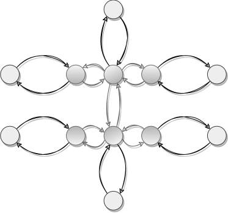

A model-free method to learn multiple skills in parallel on modular robots
Locomotion is a pre-requisite for complex behaviour in mobile robots (like foraging, and scanning the environment). Being able to learn locomotion skills quickly is therefore a must when we deploy robots in unseen environments. When we lack a proper model of the world and of the robot, we need a model-free approach. In nature, many newborn animals can walk within minutes of birth. Central Pattern Generating neural networks (CPGs) can coordinate movement effectively without the need for extensive learning and neural adaptation. These neural centres, located in the spinal cord, can encode different behaviours that are started when higher level commands from the brain initialize the corresponding neurons. Drawing inspiration from this phenomenon, we propose a novel method that enables robots to learn locomotion in just 15 minutes.
In this work, 6 modular robots of various design are tasked to learn three locomotion skills from scratch with a training budget of 15 minutes in the real world. The skills are defined as follows:
- Gait (→): Maximizing planar displacement from starting position in a fixed time-interval
- Clockwise- and Anti-clockwise Rotation (⟳/⟲): Maximizing planar rotation in a fixed time-interval.
Our modular robots are either hand-designed (top row of picture below) or a product of automated design using Evolutionary Computing (bottom row).
How it works
CPGs are pairs of artificial neurons that reciprocally inhibit and excite each other to produce oscillatory behaviour, and can be described mathematically as a set of Ordinary Differential Equations as shown below. Originally, CPGs were used to describe the behaviour of groups of neuron responsible for generating locomotion patterns found in the spinal cords of several animals. In the last decade, CPGs have become increasingly more popular in robotics as a form of bio-inspired control due to their functional smoothness and cyclical behaviour.
We create a network of CPGs by coupling several oscillators with each other, based on the morphological design of a modular robot (depicted below as a blueprint). Here, each servomotor gets assigned a single CPG-oscillator that is subsequently linked to its neighbours, according to their modular-based distance as shown below. The final CPG-network is able to produce more complex signals which are correlated with neighbouring oscillators. The state-value of each \(x\)-neuron is sent as a position command to the corresponding robot's joints

Although some details may vary, our work shows that in essence the oscillatory behaviour within the CPG-network is invariably defined in terms of the connectivity between neurons and their initial state. As a result we can identify two modes of optimisation: 1) Weight optimisation (WO), which is a standard way of optimizing CPGs; and 2) Initial State optimisation (ISO), which (to our knowledge) has never been investigated. Our paper provides a thorough insight to the difference between WO and ISO and their mathematical properties. Here, we provide a quick insight to develop enough intuition to understand why ISO works.
State-space
If we look at the state-value of each neuron in our CPG-network, as time progresses, we can find (semi-)cyclical pattens emerge. Below, we map the state-value of two neurons on a 2D-plane to show the behaviour of the CPGs in their so-called 'state-space' (i.e. the bottom right plot). Keep in mind that the actual state-space of this particular CPG-network contains 12-dimensions, but for now 2-dimensions suffice for interpretation.
The state-space trajectory is defined by the local derivatives of our CPG-network at any point in state-space. We can show this as a vector field in state-space, where each vector indicates the local derivative at the corresponding point in state-space. Now recall that the dynamics of the CPGs are solely defined by the weights in the network. This means that when we change the weights -as is done during WO- we are only changing the vector field in state-space, i.e. the local derivatives. A clear depiction of what happens when weights are changed is shown below.
Initial State Optimisation
WO changes network dynamics (i.e. the vector field in state-space) which in return re-defines the behaviour of the CPGs. ISO keeps the network dynamics the same and 'selects' the proper behaviour through its initial position. Meaning we freeze the weights of the CPGs and optimises the initial start in state-space. Thus, in ISO the vector field remains the same, but we search for optimal CPG behaviour by testing different initial states. We like to view this as the CPG-network containing a 'reservoir' of (good) behaviours (encoded by its weights) and our initial state providing an 'input signal' to our network to select one of these behaviours.

Now we load our CPG-network on the real robot, where we test our sampled initial state. During a single trial, we save the intermediate states of the network (\(\mathcal{S}\)). In addition, an overhead system tracks the movement of our robot in the real world to collect position and orientation data (\(\mathcal{D}\)). In the end, we match the real world position and orientation data with the CPG-states at each respective time-stamp (\([0,1, \dots, N]\)).
Bootstrapping and Parallelization
ISO optimisation approaches the CPG-network as a reservoir of behaviours encoded by frozen weights. This means that optimisation does not affect the network dynamics (the vector field remains the same). We can use this to our advantage with the following two tricks:
- Bootstrapping: The intermediate CPG-network states from \(\mathcal{S}\) can be considered as additional possible initial state samples. This increases the amount of samples that we get \(N\) times, we assess the performance of a state at each time-step instead of assessing only one. The longer a trial lasts, the more bootstrapped samples we obtain.
- Parallelization: The behavioural performance can be assessed on \(\mathcal{D}\) for multiple skills at once, instead of evaluating a single skill metric. Optimization of specific skills do not interfere when the dynamics of the CPG-network are frozen. This allows information to flow between learning tasks as can extract useful information among all skills at once.
A trade-off can be made between testing longer to obtain more bootstrapped samples, or sampling different regions in state space with more trials (see Appendix for hyperparameter sweep of ISO). In our work, we choose to test 5 different regions for two minutes each (10 minutes in total) using random search. In the end, we select the best overall (intermediate) initial state sample for each skill (denoted as [\(s^*_{⟲}\), \(s^*_{→}\), \(s^*_{⟳}\)]).
In the end, we re-test our best initial states [\(s^*_{⟲}\), \(s^*_{→}\), \(s^*_{⟳}\)] to measure the performance of our ISO algorithm's final skills. The resulting behaviours are shown below.
Target Following
We consider our CPG-network as a reservoir that encodes many behaviours, which we can learn through ISO. The resulting repertoire of motor skills can be used for more complex tasks. We provide a feedback signal to our CPG-controller to smoothly switch between skills (see paper for more detail). Using, our learned skills (→,⟳,⟲) we are able to successfully complete a random target following task.
To conclude
Learning multiple movement skills is an important challenge for legged robotics insofar as it is a prerequisite for viable complex behaviour. In this paper, we show that learning can be extremely fast when considering our CPG-network as a reservoir of behaviour from which we can 'select' optimal patterns for several skills. Future work will explore how optimisations methods need to look like from this new search paradigm, and we will further investigate the use of bootstrapping and parallelization, leading to a more complex skill learning framework that overall could be applied also to robot in other domains (e.g. soft robots or underwater applications).